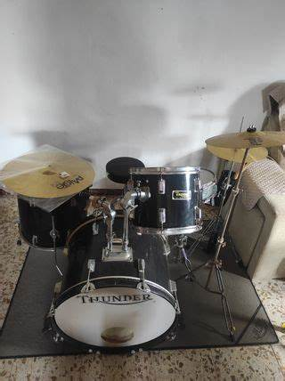
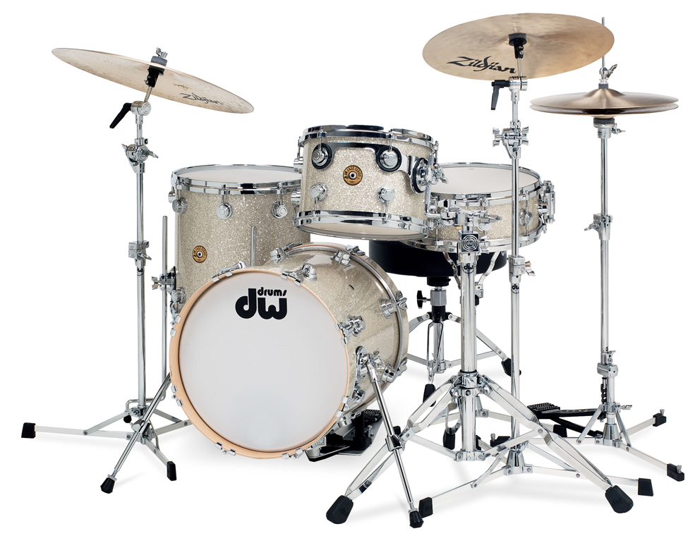
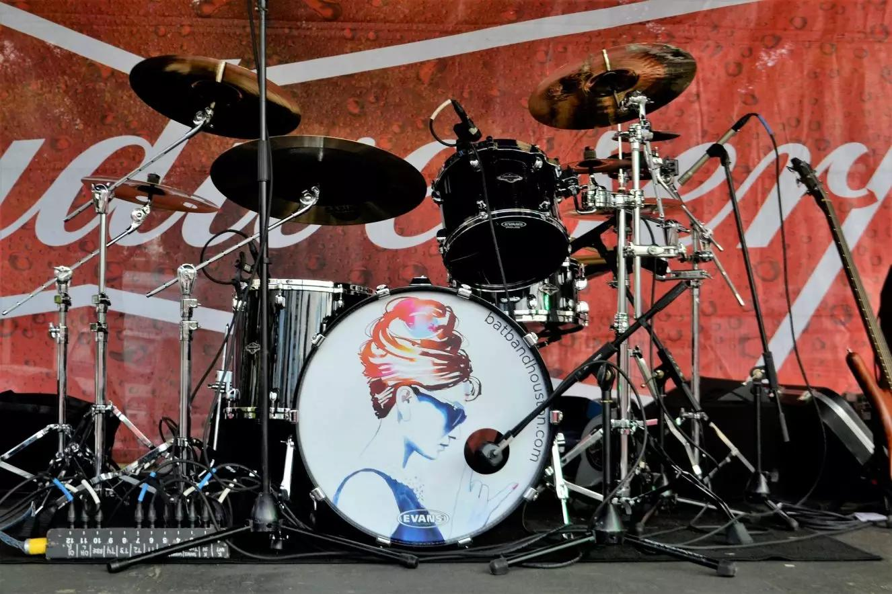
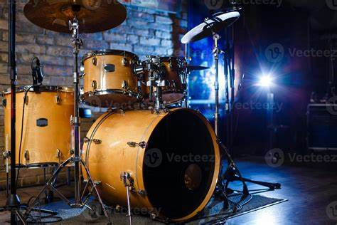
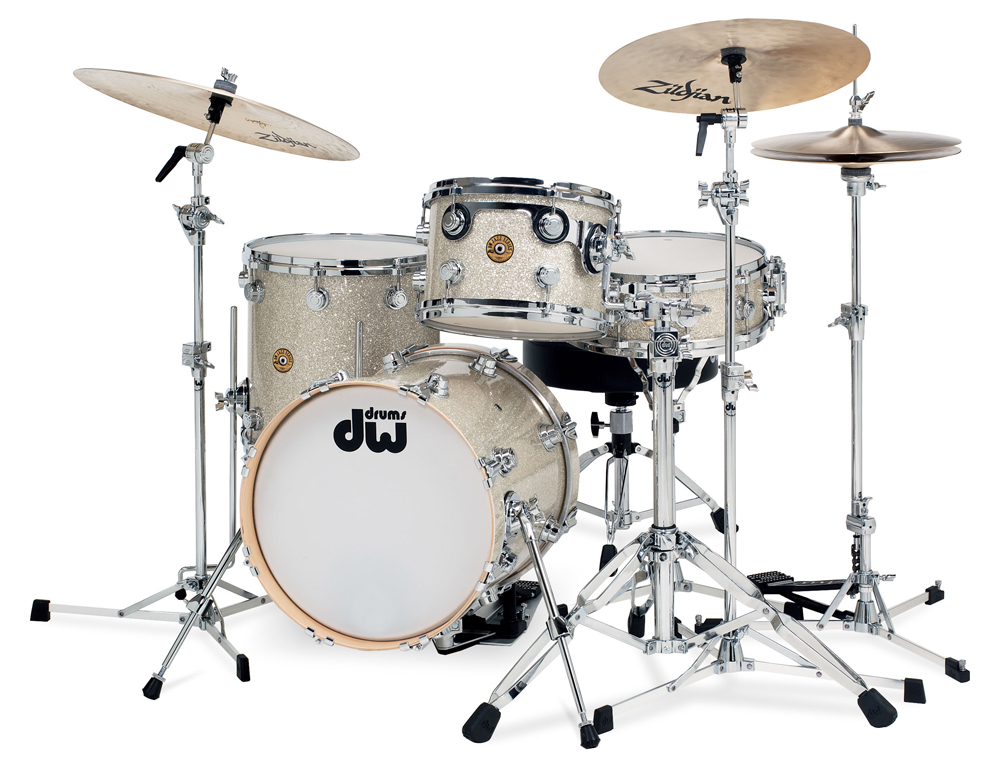
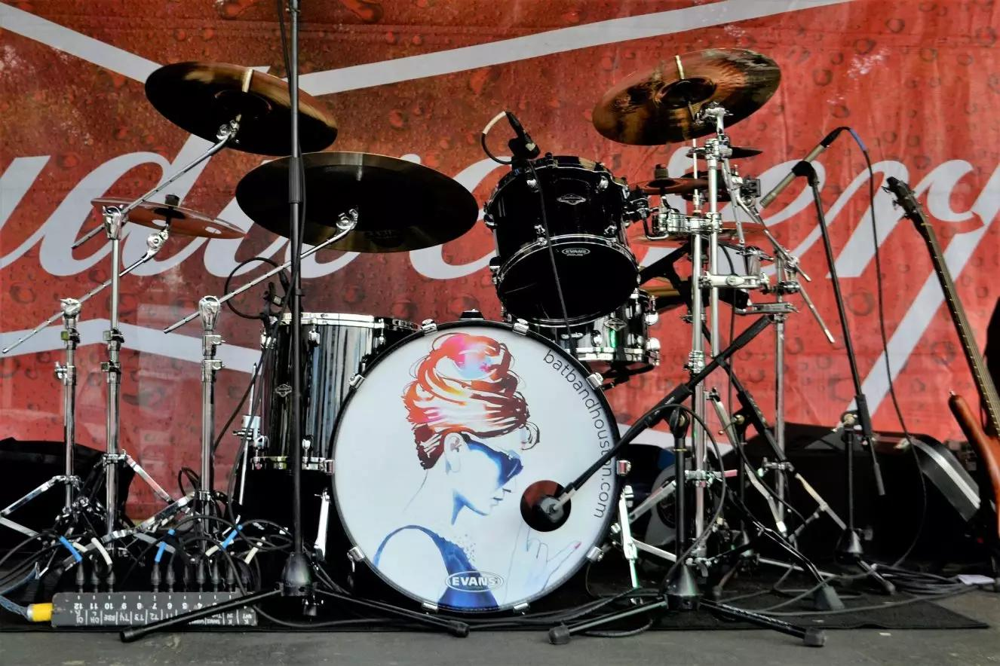
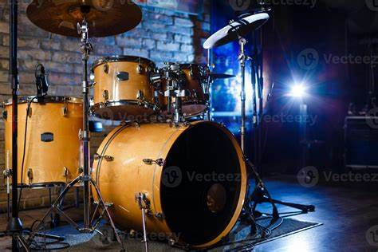
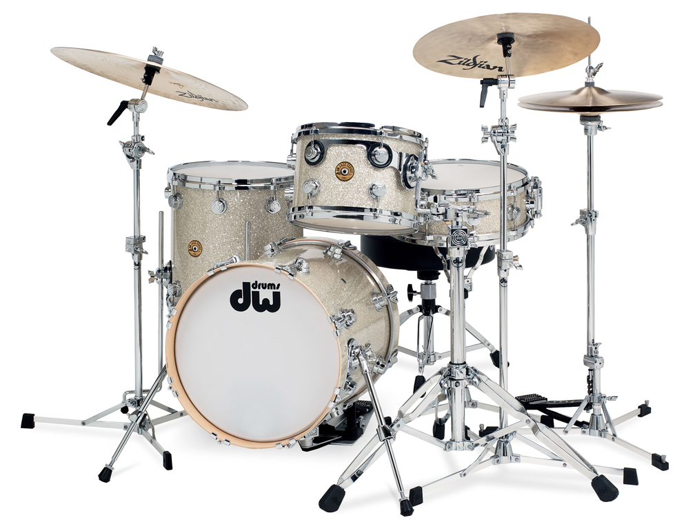
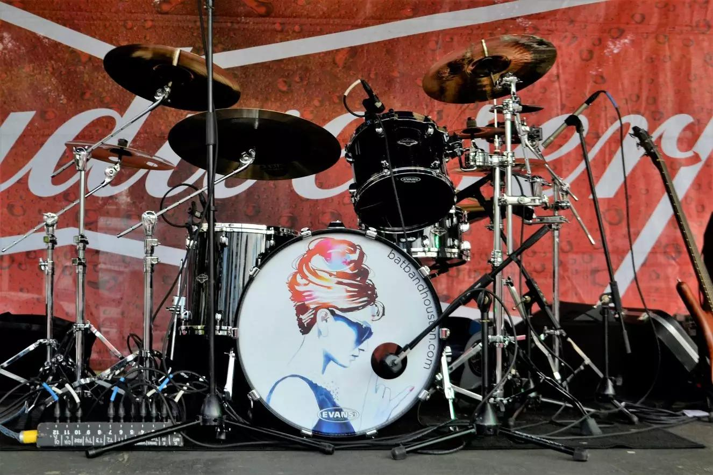
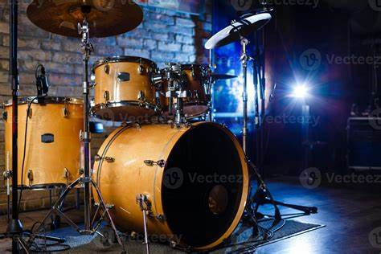

Twitter X
Twitter X
Bienvenido al Blog
Descubre todo sobre las baterías musicales, su historia, tipos y cómo se han convertido en el corazón de muchas bandas alrededor del mundo.
Video Destacado
Explora cómo las baterías pueden transformar una canción en una obra maestra con este emocionante video.
Galería

 








